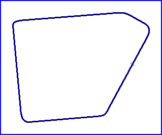

| Length | |
| Direction | Clockwise |
Contact Information |
|
| Address |
|
| Telephone | |
| Website | |
Stiens
"Middelsee" Historic Racing Street Circuit

| Length | |
| Direction | Clockwise |
Contact Information |
|
| Address |
|
| Telephone | |
| Website | |
racingcircuits.net - Lasted Updated: 05 October 2004 23:47:13 GMT Daylight Time
Data
Sources
email - from Roelard Smit on Mon 13/09/04 15:53, with reference to
correspondance with Alle Hamstra.